library(stringr)
library(tibble)
library(magrittr)
library(purrr)
library(dplyr)
library(readr)11 Hacking Strings with stringr
12 Hacking Strings
12.1 Introduction
In this chapter, we will learn to work with string data in R using stringr. As we did in the other chapters, we will use a case study to explore the various features of the stringr package. We will use the following R packages:
12.2 Case Study
- extract domain name from random email ids
- extract image type from url
- extract image dimension from url
- extract extension from domain name
- extract http protocol from url
- extract file type from url
12.2.1 Data
mockstring <- read_csv('https://raw.githubusercontent.com/rsquaredacademy/datasets/master/mock_strings.csv')
mockstring# A tibble: 1,000 × 12
id image_url domain imageurl email filename phone address url full_name
<dbl> <chr> <chr> <chr> <chr> <chr> <chr> <chr> <chr> <chr>
1 1 https://r… addto… http://… mnew… PedeMal… 66-(… 8 Anha… http… Mufi Ruit
2 2 https://r… gmpg.… http://… mdan… Loborti… 351-… 697 Ea… http… Leese Fu…
3 3 https://r… samsu… http://… hgir… CongueD… 33-(… 89 Dot… http… Blakelee…
4 4 https://r… spoti… http://… pmcm… Eleifen… 86-(… 98135 … http… Terencio…
5 5 https://r… wunde… http://… dris… PurusPh… 223-… 7814 P… http… Debee Mc…
6 6 https://r… alexa… http://… cphl… Element… 420-… 4897 L… http… Fran Pai…
7 7 https://r… googl… http://… kdod… Mattis.… 1-(7… 53541 … http… Frasco B…
8 8 https://r… ed.gov http://… vhou… PurusEu… 62-(… 4819 H… http… Car Pont…
9 9 https://r… jigsy… http://… rdik… JustoEt… 1-(6… 68096 … http… Tades Ch…
10 10 https://r… jugem… http://… tdud… Ante.ti… 30-(… 9595 S… http… Wilton K…
# ℹ 990 more rows
# ℹ 2 more variables: currency <chr>, passwords <chr>12.2.2 Data Dictionary
- domain: dummy website domain
- imageurl: url of an image
- email: dummy email id
- filename: dummy file name with different extensions
- phone: dummy phone number
- address: dummy address with door and street names
- url: randomyly generated urls
- full_name: dummy first and last names
- currency: different currencies
- passwords: dummy passwords
12.3 Overview
Before we start with the case study, let us take a quick tour of stringr and introduce ourselves to some of the functions we will be using later in the case study. One of the columns in the case study data is email. It contains random email ids. We want to ensure that the email ids adher to a particular format .i.e
- they contain
@ - they contain only one
@
Let us first detect if the email ids contain @. Since the data set has 1000 rows, we will use a smaller sample in the examples.
mockdata <- slice(mockstring, 1:10)
mockdata# A tibble: 10 × 12
id image_url domain imageurl email filename phone address url full_name
<dbl> <chr> <chr> <chr> <chr> <chr> <chr> <chr> <chr> <chr>
1 1 https://r… addto… http://… mnew… PedeMal… 66-(… 8 Anha… http… Mufi Ruit
2 2 https://r… gmpg.… http://… mdan… Loborti… 351-… 697 Ea… http… Leese Fu…
3 3 https://r… samsu… http://… hgir… CongueD… 33-(… 89 Dot… http… Blakelee…
4 4 https://r… spoti… http://… pmcm… Eleifen… 86-(… 98135 … http… Terencio…
5 5 https://r… wunde… http://… dris… PurusPh… 223-… 7814 P… http… Debee Mc…
6 6 https://r… alexa… http://… cphl… Element… 420-… 4897 L… http… Fran Pai…
7 7 https://r… googl… http://… kdod… Mattis.… 1-(7… 53541 … http… Frasco B…
8 8 https://r… ed.gov http://… vhou… PurusEu… 62-(… 4819 H… http… Car Pont…
9 9 https://r… jigsy… http://… rdik… JustoEt… 1-(6… 68096 … http… Tades Ch…
10 10 https://r… jugem… http://… tdud… Ante.ti… 30-(… 9595 S… http… Wilton K…
# ℹ 2 more variables: currency <chr>, passwords <chr>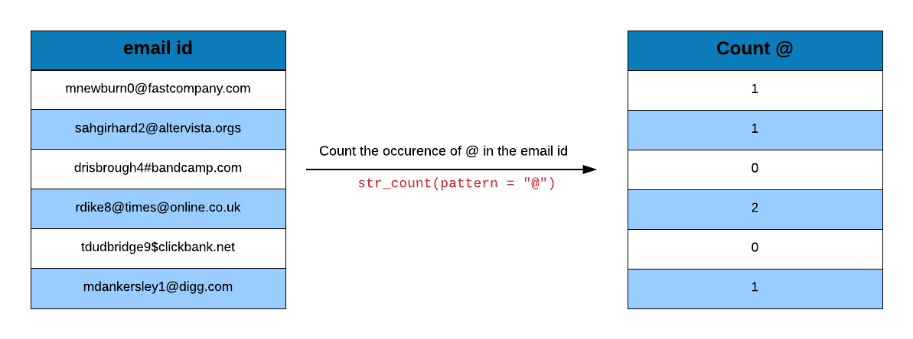
Use str_detect() to detect @ and str_count() to count the number of times @ appears in the email ids.
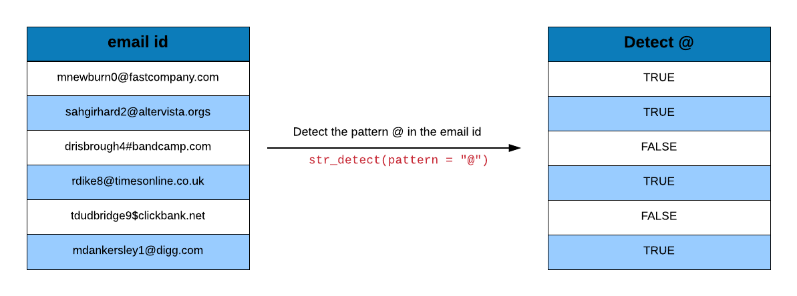
# detect @
str_detect(mockdata$email, pattern = "@") [1] TRUE TRUE TRUE TRUE TRUE TRUE TRUE TRUE TRUE TRUE# count @
str_count(mockdata$email, pattern = "@") [1] 1 1 1 1 1 1 1 1 1 1We can use str_c() to concatenate strings. Let us add the string email id: before each email id in the data set.
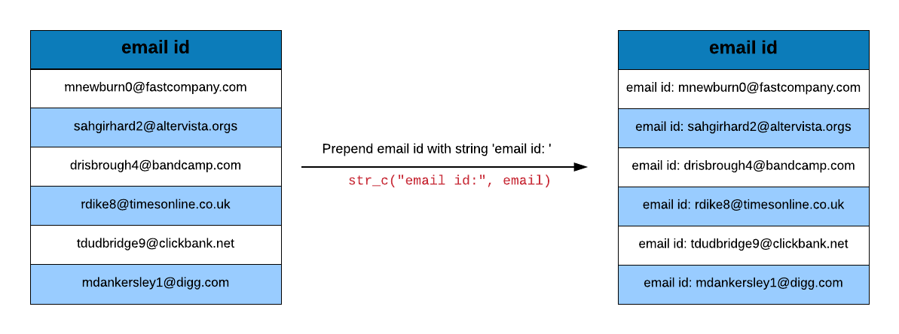
str_c("email id:", mockdata$email) [1] "email id:mnewburn0@fastcompany.com"
[2] "email id:mdankersley1@digg.com"
[3] "email id:hgirhard2@altervista.org"
[4] "email id:pmcmenamy3@sciencedirect.com"
[5] "email id:drisbrough4@bandcamp.com"
[6] "email id:cphlippi5@surveymonkey.com"
[7] "email id:kdodswell6@un.org"
[8] "email id:vhourihane7@ovh.net"
[9] "email id:rdike8@timesonline.co.uk"
[10] "email id:tdudbridge9@clickbank.net" If we want to split a string into two parts using a particular pattern, we use str_split(). Let us split the domain name and extension from the domain column in the data. The domain name and extension are separated by . and we will use it to split the domain column. Since . is a special character, we will use two slashes to escape the special character.
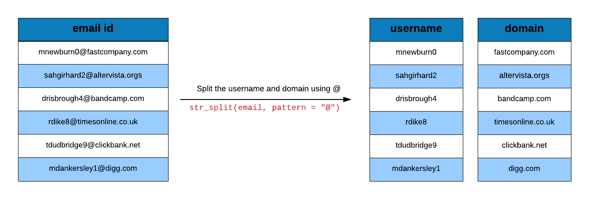
str_split(mockdata$domain, pattern = "\\.")[[1]]
[1] "addtoany" "com"
[[2]]
[1] "gmpg" "org"
[[3]]
[1] "samsung" "com"
[[4]]
[1] "spotify" "com"
[[5]]
[1] "wunderground" "com"
[[6]]
[1] "alexa" "com"
[[7]]
[1] "google" "it"
[[8]]
[1] "ed" "gov"
[[9]]
[1] "jigsy" "com"
[[10]]
[1] "jugem" "jp" We can truncate a string using str_trunc(). The default truncation happens at the beggining of the string but we can truncate the central part or the end of the string as well.
str_trunc(mockdata$email, width = 10) [1] "mnewbur..." "mdanker..." "hgirhar..." "pmcmena..." "drisbro..."
[6] "cphlipp..." "kdodswe..." "vhourih..." "rdike8@..." "tdudbri..."str_trunc(mockdata$email, width = 10, side = "left") [1] "...any.com" "...igg.com" "...sta.org" "...ect.com" "...amp.com"
[6] "...key.com" "...@un.org" "...ovh.net" "...e.co.uk" "...ank.net"str_trunc(mockdata$email, width = 10, side = "center") [1] "mnew...com" "mdan...com" "hgir...org" "pmcm...com" "dris...com"
[6] "cphl...com" "kdod...org" "vhou...net" "rdik....uk" "tdud...net"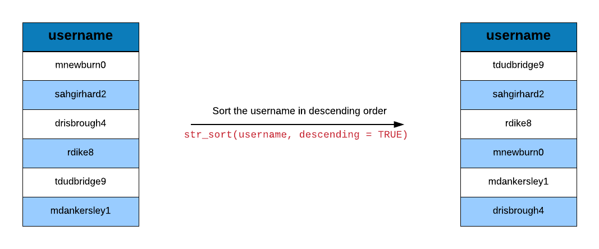
Strings can be sorted using str_sort(). Let us quickly sort the emails in both ascending and descending orders.
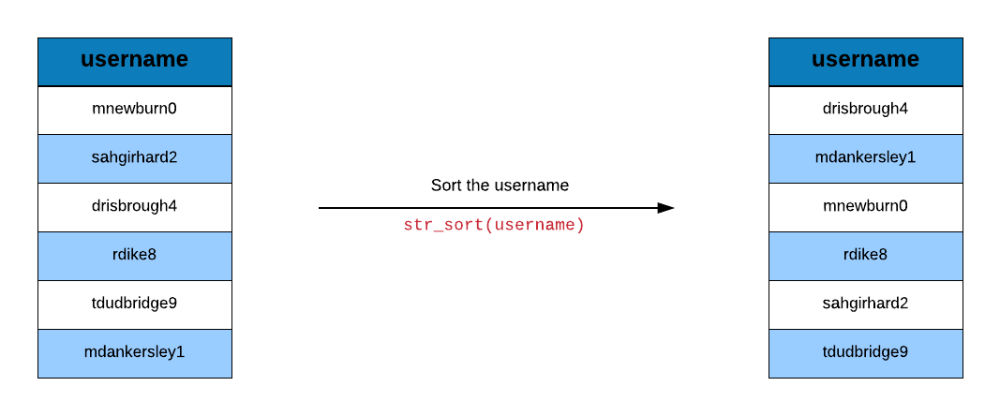
str_sort(mockdata$email) [1] "cphlippi5@surveymonkey.com" "drisbrough4@bandcamp.com"
[3] "hgirhard2@altervista.org" "kdodswell6@un.org"
[5] "mdankersley1@digg.com" "mnewburn0@fastcompany.com"
[7] "pmcmenamy3@sciencedirect.com" "rdike8@timesonline.co.uk"
[9] "tdudbridge9@clickbank.net" "vhourihane7@ovh.net" str_sort(mockdata$email, decreasing = TRUE) [1] "vhourihane7@ovh.net" "tdudbridge9@clickbank.net"
[3] "rdike8@timesonline.co.uk" "pmcmenamy3@sciencedirect.com"
[5] "mnewburn0@fastcompany.com" "mdankersley1@digg.com"
[7] "kdodswell6@un.org" "hgirhard2@altervista.org"
[9] "drisbrough4@bandcamp.com" "cphlippi5@surveymonkey.com" The case of a string can be changed to upper, lower or title case as shown below.
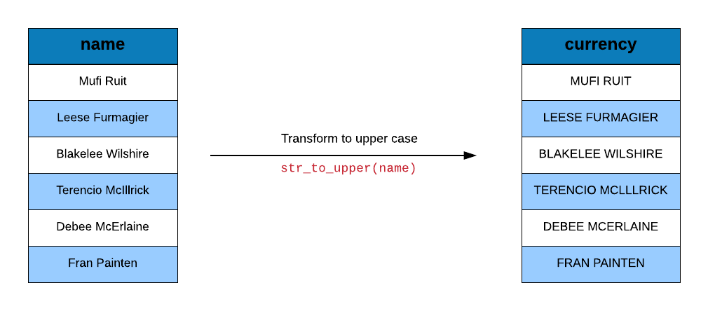
str_to_upper(mockdata$full_name) [1] "MUFI RUIT" "LEESE FURMAGIER" "BLAKELEE WILSHIRE"
[4] "TERENCIO MCILLRICK" "DEBEE MCERLAINE" "FRAN PAINTEN"
[7] "FRASCO BOWICH" "CAR PONTEN" "TADES CHECCUCCI"
[10] "WILTON KEMMEY" str_to_lower(mockdata$full_name) [1] "mufi ruit" "leese furmagier" "blakelee wilshire"
[4] "terencio mcillrick" "debee mcerlaine" "fran painten"
[7] "frasco bowich" "car ponten" "tades checcucci"
[10] "wilton kemmey" Parts of a string can be replaced using str_replace(). In the address column of the data set, let us replace:
- Street with ST
- Road with RD
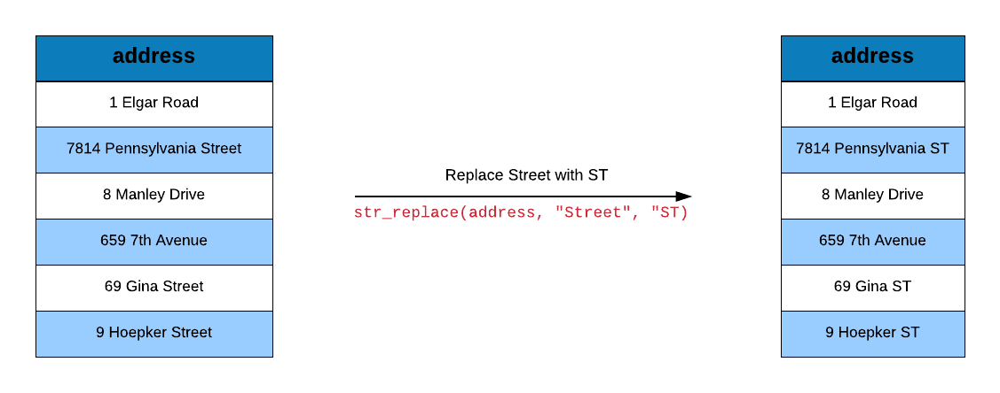
str_replace(mockdata$address, "Street", "ST") [1] "8 Anhalt Crossing" "697 East Avenue"
[3] "89 Dottie Circle" "98135 Blue Bill Park Drive"
[5] "7814 Pennsylvania ST" "4897 Little Fleur Drive"
[7] "53541 Morrow Center" "4819 Hermina Parkway"
[9] "68096 Monument Park" "9595 Spaight Avenue" str_replace(mockdata$address, "Road", "RD") [1] "8 Anhalt Crossing" "697 East Avenue"
[3] "89 Dottie Circle" "98135 Blue Bill Park Drive"
[5] "7814 Pennsylvania Street" "4897 Little Fleur Drive"
[7] "53541 Morrow Center" "4819 Hermina Parkway"
[9] "68096 Monument Park" "9595 Spaight Avenue" We can extract parts of the string that match a particular pattern using str_extract().
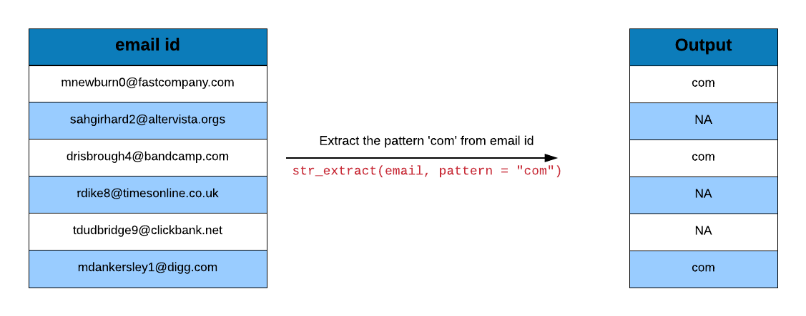
str_extract(mockdata$email, pattern = "org") [1] NA NA "org" NA NA NA "org" NA NA NA Before we extract, we need to know whether the string contains text that match our pattern. Use str_match() to see if the pattern is present in the string.
str_match(mockdata$email, pattern = "org") [,1]
[1,] NA
[2,] NA
[3,] "org"
[4,] NA
[5,] NA
[6,] NA
[7,] "org"
[8,] NA
[9,] NA
[10,] NA If we are dealing with a character vector and know that the pattern we are looking at is present in the vector, we might want to know the index of the strings in which it is present. Use str_which() to identify the index of the strings that match our pattern.
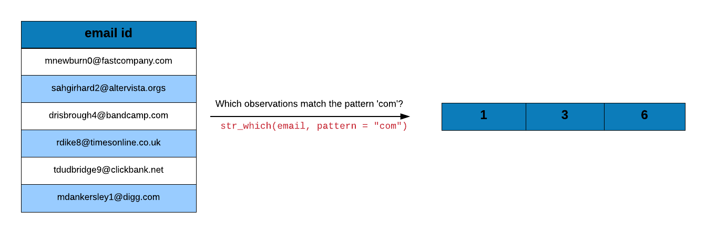
str_which(mockdata$email, pattern = "org")[1] 3 7Another objective might be to locate the position of the pattern we are looking for in the string. For example, if we want to know the position of @ in the email ids, we can use str_locate().
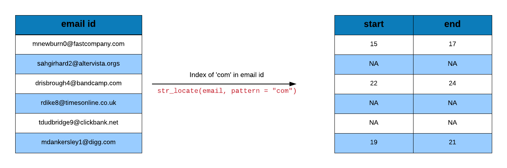
str_locate(mockdata$email, pattern = "@") start end
[1,] 10 10
[2,] 13 13
[3,] 10 10
[4,] 11 11
[5,] 12 12
[6,] 10 10
[7,] 11 11
[8,] 12 12
[9,] 7 7
[10,] 12 12The length of the string can be computed using str_length(). Let us ensure that the length of the strings in the password column is 16.
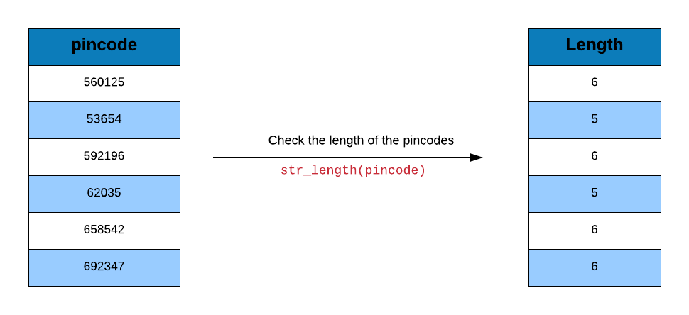
str_length(mockdata$passwords) [1] 16 16 16 16 16 16 16 16 16 16We can extract parts of a string by specifying the starting and ending position using str_sub(). Let us extract the currency type from the currency column.
str_sub(mockdata$currency, start = 1, end = 1) [1] "¥" "$" "€" "€" "€" "¥" "$" "¥" "€" "€"One final function that we will look at before the case study is word(). It extracts word(s) from sentences. We do not have any sentences in the data set, but let us use it to extract the first and last name from the full_name column.
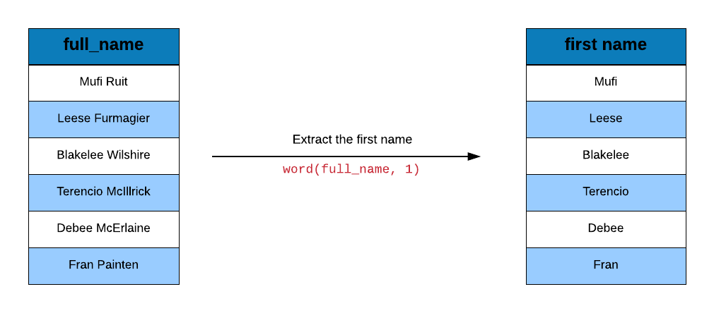
word(mockdata$full_name, 1) [1] "Mufi" "Leese" "Blakelee" "Terencio" "Debee" "Fran"
[7] "Frasco" "Car" "Tades" "Wilton" word(mockdata$full_name, 2) [1] "Ruit" "Furmagier" "Wilshire" "McIllrick" "McErlaine" "Painten"
[7] "Bowich" "Ponten" "Checcucci" "Kemmey" Alright, now let us apply what we have learned so far to our case study.
12.4 Extract domain name from email ids
12.4.1 Steps
- split email using pattern
@ - extract the second element from the resulting list
- split the above using pattern
\\. - extract the first element from the resulting list
Let us take a look at the emails before we extract the domain names.
emails <-
mockstring |>
pull(email) |>
head()
emails[1] "mnewburn0@fastcompany.com" "mdankersley1@digg.com"
[3] "hgirhard2@altervista.org" "pmcmenamy3@sciencedirect.com"
[5] "drisbrough4@bandcamp.com" "cphlippi5@surveymonkey.com" 12.4.1.1 Step 1: Split email using pattern @.
We will split the email using str_split. It will split a string using the pattern supplied. In our case the pattern is @.
str_split(emails, pattern = '@')[[1]]
[1] "mnewburn0" "fastcompany.com"
[[2]]
[1] "mdankersley1" "digg.com"
[[3]]
[1] "hgirhard2" "altervista.org"
[[4]]
[1] "pmcmenamy3" "sciencedirect.com"
[[5]]
[1] "drisbrough4" "bandcamp.com"
[[6]]
[1] "cphlippi5" "surveymonkey.com"12.4.1.2 Step 2: Extract the second element from the resulting list.
Step 1 returned a list. Each element of the list has two values. The first one is the username and the second is the domain name. Since we are extracting the domain name, we want the second value from each element of the list.
We will use map_chr() from purrr to extract the domain names. It will return the second value from each element in the list. Since the domain name is a string, map_chr() will return a character vector.
emails |>
str_split(pattern = '@') |>
map_chr(2)[1] "fastcompany.com" "digg.com" "altervista.org"
[4] "sciencedirect.com" "bandcamp.com" "surveymonkey.com" 12.4.1.3 Step 3: Split the above using pattern \\..
We want the domain name and not the extension. Step 2 returned a character vector and we need to split the domain name and the domain extension. They are separated by .. Since . is a special character, we will use \\ before . to escape it. Let us split the domain name and domain extension using str_split and \\. as the pattern.
emails |>
str_split(pattern = '@') |>
map_chr(2) |>
str_split(pattern = '\\.') [[1]]
[1] "fastcompany" "com"
[[2]]
[1] "digg" "com"
[[3]]
[1] "altervista" "org"
[[4]]
[1] "sciencedirect" "com"
[[5]]
[1] "bandcamp" "com"
[[6]]
[1] "surveymonkey" "com" 12.4.1.4 Step 4: Extract the first element from the resulting list.
Now that we have separated the domain name from its extension, let us extract the first value from each element in the list returned in step 3. We will again use map_chr to achieve this.
emails |>
str_split(pattern = '@') |>
map_chr(2) |>
str_split(pattern = '\\.') |>
map_chr(1)[1] "fastcompany" "digg" "altervista" "sciencedirect"
[5] "bandcamp" "surveymonkey" 12.5 Extract Domain Extension
The below code extracts the domain extension instead of the domain name.
emails |>
str_split(pattern = '@') |>
map_chr(2) |>
str_split(pattern = '\\.', simplify = TRUE) |>
(\(m) m[, 2])()[1] "com" "com" "org" "com" "com" "com"12.6 Extract image type from URL
12.6.1 Steps
- split imageurl using pattern
\\. - extract the third value from each element of the resulting list
- subset the string using the index position
Let us take a look at the URL of the image.
img <-
mockstring |>
pull(imageurl) |>
head()
img[1] "http://dummyimage.com/130x183.jpg/dddddd/000000"
[2] "http://dummyimage.com/106x217.bmp/dddddd/000000"
[3] "http://dummyimage.com/146x127.bmp/cc0000/ffffff"
[4] "http://dummyimage.com/181x194.png/5fa2dd/ffffff"
[5] "http://dummyimage.com/220x123.jpg/ff4444/ffffff"
[6] "http://dummyimage.com/118x176.bmp/dddddd/000000"12.6.1.1 Step 1: Split imageurl using pattern \\.
Let us split imageurl using str_split and the pattern \\..
str_split(img, pattern = '\\.')[[1]]
[1] "http://dummyimage" "com/130x183" "jpg/dddddd/000000"
[[2]]
[1] "http://dummyimage" "com/106x217" "bmp/dddddd/000000"
[[3]]
[1] "http://dummyimage" "com/146x127" "bmp/cc0000/ffffff"
[[4]]
[1] "http://dummyimage" "com/181x194" "png/5fa2dd/ffffff"
[[5]]
[1] "http://dummyimage" "com/220x123" "jpg/ff4444/ffffff"
[[6]]
[1] "http://dummyimage" "com/118x176" "bmp/dddddd/000000"12.6.1.2 Step 2: Extract the third value from each element of the resulting list
Step 1 returned a list the elements of which have 3 values each. If you observe the list, the image type is in the 3rd value. We will now extract the third value from each element of the list using map_chr.
img |>
str_split(pattern = '\\.') |>
map_chr(3)[1] "jpg/dddddd/000000" "bmp/dddddd/000000" "bmp/cc0000/ffffff"
[4] "png/5fa2dd/ffffff" "jpg/ff4444/ffffff" "bmp/dddddd/000000"12.6.1.3 Step 3: Subset the string using the index position
We can now extract the image type in two ways:
- subset the first 3 characters of the string
- split the string using pattern
/and extract the first value from the elements of the resulting list
Below is the first method. We know that the image type is 3 characters. So we use str_sub to subset the first 3 characters. The index positions are mentioned using start and stop.
img |>
str_split(pattern = '\\.') |>
map_chr(3) |>
str_sub(start = 1, end = 3)[1] "jpg" "bmp" "bmp" "png" "jpg" "bmp"In case you are not sure about the length of the image type. In such cases, we will split the string using pattern / and then use map_chr to extract the first value of each element of the resulting list.
img |>
str_split(pattern = '\\.') |>
map_chr(3) |>
str_split(pattern = '/') |>
map_chr(1)[1] "jpg" "bmp" "bmp" "png" "jpg" "bmp"12.7 Extract Image Dimesion from URL
12.7.1 Steps
- locate numbers between 0 and 9
- extract part of url starting with image dimension
- split the string using the pattern
\\. - extract the first element
12.7.1.1 Step 1: Locate numbers between 0 and 9.
Let us inspect the image url. The dimension of the image appears after the domain extension and there are no numbers in the url before. We will locate the position or index of the first number in the url using str_locate() and using the pattern [0-9] which instructs to look for any number between and including 0 and 9.
str_locate(img, pattern = "[0-9]") start end
[1,] 23 23
[2,] 23 23
[3,] 23 23
[4,] 23 23
[5,] 23 23
[6,] 23 2312.7.1.2 Step 2: Extract url
We know where the dimension is located in the url. Let us extract the part of the url that contains the image dimension using str_sub().
str_sub(img, start = 23) [1] "130x183.jpg/dddddd/000000" "106x217.bmp/dddddd/000000"
[3] "146x127.bmp/cc0000/ffffff" "181x194.png/5fa2dd/ffffff"
[5] "220x123.jpg/ff4444/ffffff" "118x176.bmp/dddddd/000000"12.7.1.3 Step 3: Split the string using the pattern \\..
From the previous step, we have the part of the url that contains the image dimension. To extract the dimension, we will split it from the rest of the url using str_split() and using the pattern \\. as it separates the dimension and the image extension.
img |>
str_sub(start = 23) |>
str_split(pattern = '\\.') [[1]]
[1] "130x183" "jpg/dddddd/000000"
[[2]]
[1] "106x217" "bmp/dddddd/000000"
[[3]]
[1] "146x127" "bmp/cc0000/ffffff"
[[4]]
[1] "181x194" "png/5fa2dd/ffffff"
[[5]]
[1] "220x123" "jpg/ff4444/ffffff"
[[6]]
[1] "118x176" "bmp/dddddd/000000"12.7.1.4 Step 4: Extract the first element.
The above step resulted in a list which contains the image dimension and the rest of the url. Each element of the list is a character vector. We want to extract the first value in the character vector. Let us use map_chr() to extract the first value from each element of the list.
img |>
str_sub(start = 23) |>
str_split(pattern = '\\.') |>
map_chr(1)[1] "130x183" "106x217" "146x127" "181x194" "220x123" "118x176"12.8 Extract HTTP Protocol from URL
url1 <-
mockstring |>
pull(url) |>
first()
url1[1] "https://engadget.com/nascetur/ridiculus/mus/vivamus/vestibulum.jsp?eu=est&tincidunt=risus&in=auctor&leo=sed&maecenas=tristique&pulvinar=in&lobortis=tempus&est=sit&phasellus=amet&sit=sem&amet=fusce&erat=consequat&nulla=nulla&tempus=nisl&vivamus=nunc&in=nisl&felis=duis&eu=bibendum&sapien=felis&cursus=sed&vestibulum=interdum&proin=venenatis&eu=turpis&mi=enim&nulla=blandit&ac=mi&enim=in&in=porttitor&tempor=pede&turpis=justo&nec=eu&euismod=massa&scelerisque=donec&quam=dapibus&turpis=duis&adipiscing=at&lorem=velit&vitae=eu&mattis=est&nibh=congue&ligula=elementum&nec=in&sem=hac&duis=habitasse&aliquam=platea&convallis=dictumst&nunc=morbi&proin=vestibulum&at=velit&turpis=id&a=pretium&pede=iaculis&posuere=diam&nonummy=erat&integer=fermentum&non=justo&velit=nec&donec=condimentum&diam=neque&neque=sapien&vestibulum=placerat&eget=ante&vulputate=nulla&ut=justo&ultrices=aliquam&vel=quis&augue=turpis&vestibulum=eget&ante=elit&ipsum=sodales&primis=scelerisque&in=mauris&faucibus=sit&orci=amet&luctus=eros&et=suspendisse&ultrices=accumsan&posuere=tortor&cubilia=quis&curae=turpis&donec=sed&pharetra=ante&magna=vivamus&vestibulum=tortor&aliquet=duis&ultrices=mattis&erat=egestas&tortor=metus&sollicitudin=aenean&mi=fermentum&sit=donec"12.8.1 Steps
- split the url using the pattern
:// - extract the first element
12.8.1.1 Step 1: Split the url using the pattern ://.
The HTTP protocol is the first part of the url and is separated from the rest of the url by :. Let us split the url using str_split() and using the pattern :. Since : is a special character, we will escape it using \\.
str_split(url1, pattern = '://') [[1]]
[1] "https"
[2] "engadget.com/nascetur/ridiculus/mus/vivamus/vestibulum.jsp?eu=est&tincidunt=risus&in=auctor&leo=sed&maecenas=tristique&pulvinar=in&lobortis=tempus&est=sit&phasellus=amet&sit=sem&amet=fusce&erat=consequat&nulla=nulla&tempus=nisl&vivamus=nunc&in=nisl&felis=duis&eu=bibendum&sapien=felis&cursus=sed&vestibulum=interdum&proin=venenatis&eu=turpis&mi=enim&nulla=blandit&ac=mi&enim=in&in=porttitor&tempor=pede&turpis=justo&nec=eu&euismod=massa&scelerisque=donec&quam=dapibus&turpis=duis&adipiscing=at&lorem=velit&vitae=eu&mattis=est&nibh=congue&ligula=elementum&nec=in&sem=hac&duis=habitasse&aliquam=platea&convallis=dictumst&nunc=morbi&proin=vestibulum&at=velit&turpis=id&a=pretium&pede=iaculis&posuere=diam&nonummy=erat&integer=fermentum&non=justo&velit=nec&donec=condimentum&diam=neque&neque=sapien&vestibulum=placerat&eget=ante&vulputate=nulla&ut=justo&ultrices=aliquam&vel=quis&augue=turpis&vestibulum=eget&ante=elit&ipsum=sodales&primis=scelerisque&in=mauris&faucibus=sit&orci=amet&luctus=eros&et=suspendisse&ultrices=accumsan&posuere=tortor&cubilia=quis&curae=turpis&donec=sed&pharetra=ante&magna=vivamus&vestibulum=tortor&aliquet=duis&ultrices=mattis&erat=egestas&tortor=metus&sollicitudin=aenean&mi=fermentum&sit=donec"12.8.1.2 Step 2: Extract the first element.
The HTTP protocol is the first value in each element of the list. As we did in the previous example, we will extract it using map_chr() with the element position.
url1 |>
str_split(pattern = '://') |>
map_chr(1)[1] "https"12.9 Extract file type
urls <-
mockstring |>
pull(url) |>
head(3)12.9.1 Steps
- check if there are only 2 dots in the URL
- check if there is only 1 question mark in the URL
- detect the staritng position of file type
- tetect the ending position of file type
- use the locations to specify the index position for extracting file type
12.9.1.1 Step 1: Check if there are only 2 dots in the URL
Let us locate all the dots in the url using str_locate_all() and see if any of them contain more than 2 dots.
urls |>
str_locate_all(pattern = '\\.') |>
map_int(nrow) |>
is_greater_than(2) |>
sum()[1] 012.9.1.2 Step 2: Check if there is only 1 question mark in the URL
The next step is to check if there is only one ? (question mark) in the url.
urls |>
str_locate_all(pattern = "[?]") |>
map_int(nrow) |>
is_greater_than(1) |>
sum()[1] 012.9.1.3 Step 3: Detect the staritng position of file type
Since the file type is located between the second dot and the first quesiton mark in the url, let us extract the location of the second dot and add 1 as the file type starts after the dot.
d <-
urls |>
str_locate_all(pattern = '\\.') |>
map_int(2) |>
add(1)
d [1] 64 47 4812.9.1.4 Step 4: Detect the ending position of file type
In step 2, we confirmed that the url has only one question mark. Let us locate the question mark in the url and subtract 1 (as the file type ends before the question mark) so that we get the ending chapterion of the file type. .
q <-
urls |>
str_locate_all(pattern = "[?]") |>
map_int(1) |>
subtract(1)
q[1] 66 50 5112.9.1.5 Step 5: Specify the index position for extracting file type
From steps 3 and 4, we have the location of the second dot and the first question mark in the url. Let us use them with str_sub() to extract the file type.
str_sub(urls, start = d, end = q)[1] "jsp" "json" "json"Try it live
TipTry it in your browser
Edit the code below and press Run. It executes entirely in your browser via WebR — no R installation needed. The runtime downloads once, on this page only.